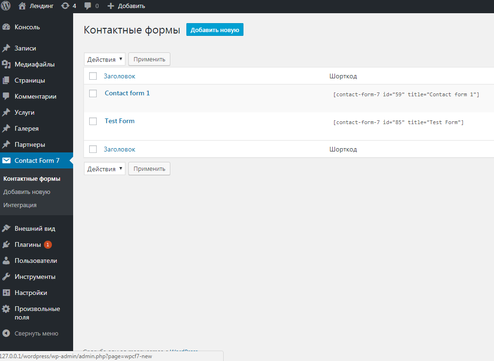
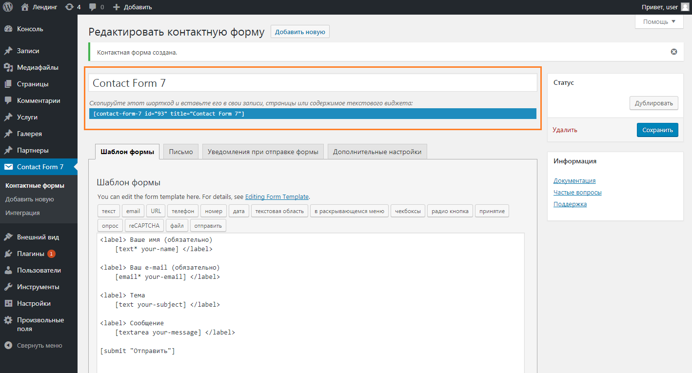
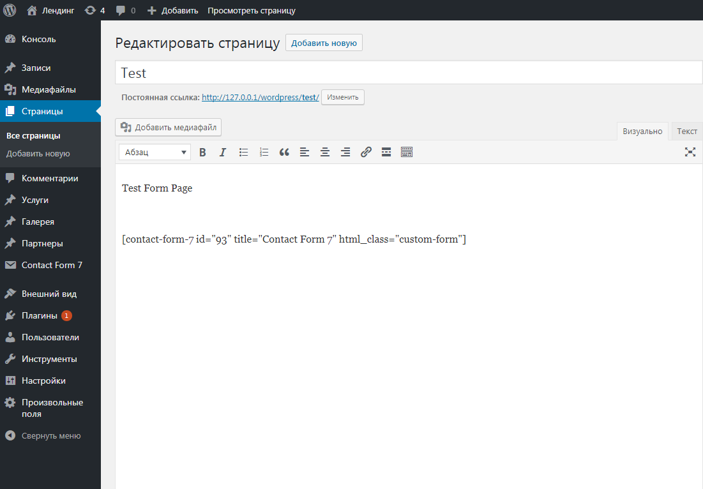
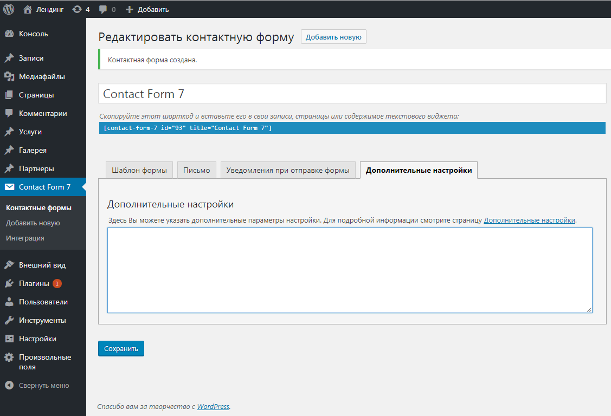
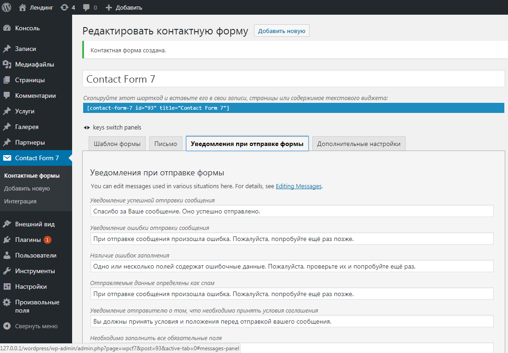
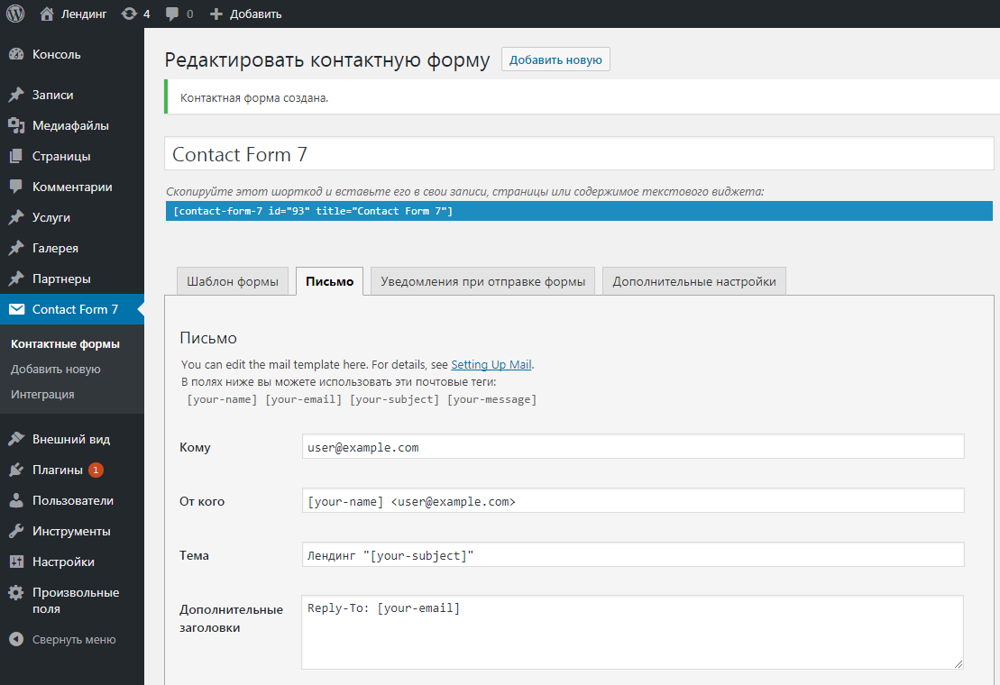

Настройка Contact Form 7
Contact Form 7 - бесплатный и простой в настройке wordpress плагин формы обратной связи.
contactform7.com - официальный сайт.
Установка Contact Form 7:
Установить плагин можно несколькими способами:
- Админ панель → Плагины (http://YOURDOMEN.com/wp-admin/plugins.php). → Добавить новый и в поиске ввести - Contact Form 7 → Установить.
-
Скачать плагин с wordpress.org. → Распаковать архив → Преместить папку с плагином в дирректорию wordpress -
/wordpress/wp-content/plugins
После установки плагина, зайти в панель админа, найти в списке плагинов Contact Form 7 и Активировать его нажав на соответствующую кнопку.
В админ панели должен появится новый пункт меню - Contact Form 7.

Создание шорткода формы:
Админ панель → Contact Form 7 → Добавить новую
В поле вводим название нашей обратной формы, например, Contact Form 7
При создании формы, шаблон формы стандартный с минимальным набором полей формы: Имя, e-mail, Тема, Сообщение, кнопка Отправить.
Далее сохраняем форму → Сохранить.

После сохранения должно появится сообщение об удачном создании формы - Контактная форма создана
А так же появится шорткод формы, который можно вставить в статью на страницу, запись или виджет, где нужно, чтобы форма отображалась:
[contact-form-7 id="93" title="Contact Form 7"]
Для добавления собственного класс форме, нужно добавить в шорткод - html_class="custom-form":
[contact-form-7 id="93" title="Contact Form 7" html_class="custom-form"]Шорткод Contact Form 7 на тестовой странице:

Использование шоткода в PHP файле:
<?php
echo do_shortcode(
'[contact-form-7 id="93" title="Contact Form 7"]'
);
?>
Дополнительные настройки
Вкладка Дополнительные настройки

subscribers_only: true -
только для зарегистрированных пользователей.
demo_mode: on -
без отправки на почту.
acceptance_as_validation: on -
Принудительная проверка полей.
on_sent_ok: "alert('sent ok');" -
Выполнение (вывод сообщения 'sent ok') javascript после успешной отправки формы.
on_submit: "alert('submit');" -
Выполнение (вывод сообщения 'sent ok') javascript при нажатии на кнопку "Отправить".
Уведомления
Вкладка Уведомления при отправке формы

Настройка сообщений об успешной отправке письма или о какой-либо ошибке (некорректный адрес электронной почты, не заполненное обязательное поле).
Настройка отправки
Вкладка Письмо

Кому - адрес, на который будут доставляться все сообщения.-
user@example.com
От кого - имя и электронный ящик, от кого пришло письмо -
[your-name] < admin@wpsite.com >
из шаблона Ваше имя (обязательно) [text* your-name]
* Если домен почты будет отличаться от домена сайта - форма будет выдавать ошибку.
Тема - тема письма -
Landing [your-subject]
из шаблона Тема [text your-subject]
Дополнительные заголовки - на этот электронный ящик можно ответить нажав кнопку "Ответить" в почтовой программе -
Reply-To: admin@wpsite.com
Поля формы
Стандартный минимальный шаблон при создании формы:
[submit "Отправить"]Поле формы с дополнительными атрибутами:
* - обязательное для заполнения поле
text - тип поля (text, email, password, ...)
your-name - имя поля - name="your-name"
id:your-id - атрибут - id="your-id"
class:custom-class class:add-class - атрибут с несколькими значениями - class="custom-class add-class"
placeholder "Введите имя" - атрибут - placeholder="Введите имя"
Просто строка "Введите имя" без атрибута placeholder - будет генерировать атрибут - value="Введите имя"
Вид поля формы в html:
<span class="wpcf7-form-control-wrap your-name">
<input type="text" name="your-name" id="your-id" value="" class="wpcf7-form-control wpcf7-text wpcf7-validates-as-required custom-class add-class" aria-required="true" aria-invalid="false" placeholder="Введите имя">
</span>Верстка более сложного поля формы:
<div class="form-row">
<label for="test-name" class="form-label">Как Вас зовут?*</label>
[text* test-name id:test-name class:form-input placeholder "ФИО"]
</div>Свои теги Contact Form 7
Особенность Contact Form 7 - генерировать дополнительные обертки в <p> тег. Отступы в шаблоне кода создают дополнительные <br> теги в html коде.
Решение - в файле wordpress/htdocs/wp-config.php задать константу - WPCF7_AUTOP со значением false:
define('WPCF7_AUTOP', false);
Если есть необходимость избавится от обертки <span class="wpcf7-form-control-wrap"></span> для любого типа поля.
В файле functions.php добавить фильтр:
add_filter('wpcf7_form_elements', function($content) {
$content = preg_replace('/<(span).*?class="\s*(?:.*\s)?wpcf7-form-control-wrap(?:\s[^"]+)?\s*"[^\>]*>(.*)<\/\1>/i', '\2', $content);
return $content;
});
С добавлением фильтра, исчезнет не только дополнительная span обертка для input, но и стандартный вывод сообщений об ошибках для поля формы!